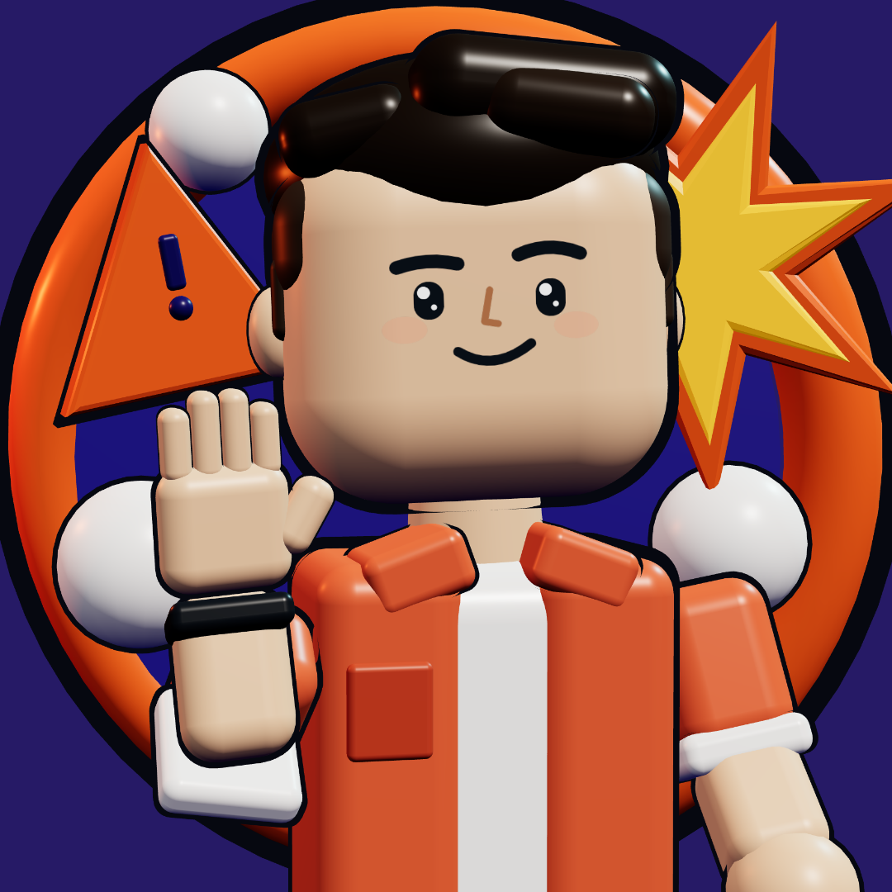

@janganpanikdulu
DIGIGIT ULAR?
JANGAN DIIKAT KENCANG!
1
Jangan gerak & jangan jalan
risiko diamputasi!
bukan lewat darah!
otot rileks = racun tertahan
kunci sendi tetap lurus

@janganpanikdulu
Sains & Tips Darurat
+ Ikuti
▶ Play Master + Audio
00.0s / 81.5s
25 Scenes:
S01
S02
S03
S04
S05
S06
S07
S08
S09
S10
S11
S12
S13
S14
S15
S16
S17
S18
S19
S20
S21
S22
S23
S24
S25